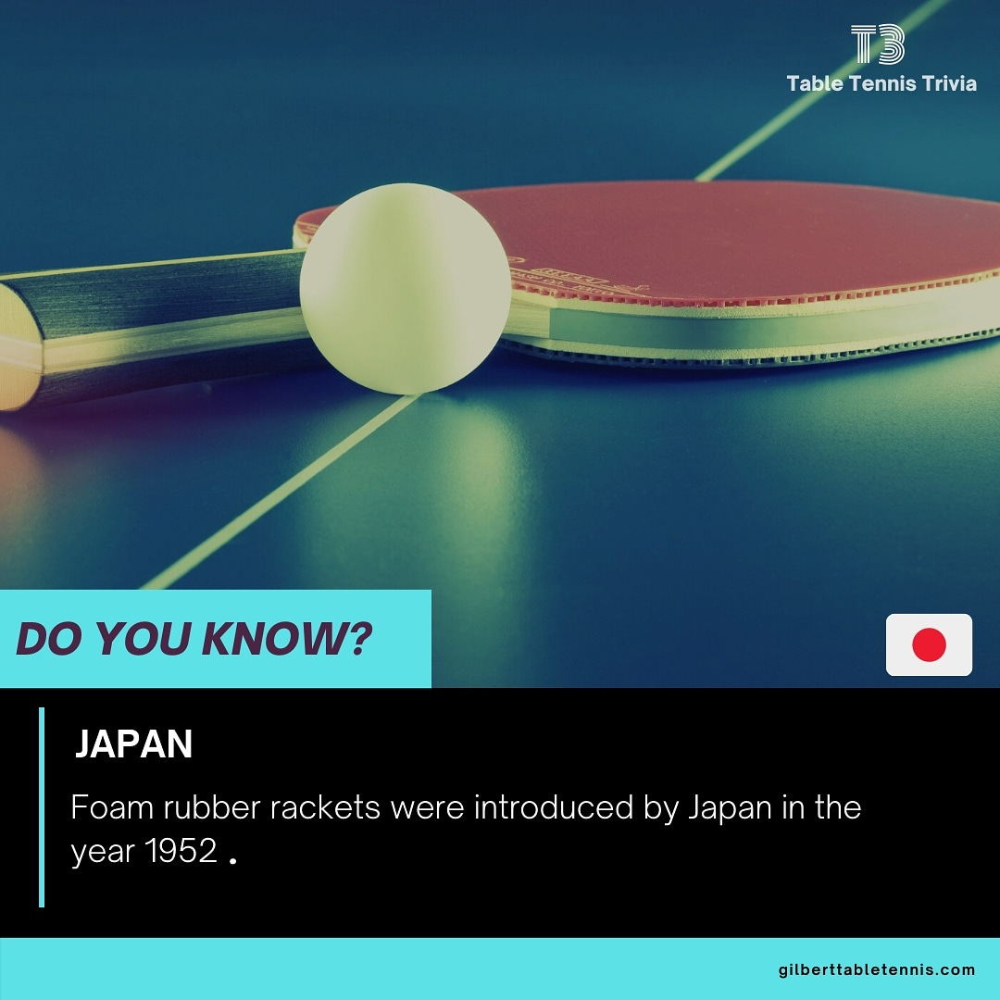

Basic Equipment
This is the basic equipment you’ll need to play table tennis. Each piece has its own role in shaping the speed, control, and overall experience of the game. Whether you’re just starting out or upgrading your gear, understanding the essentials is the first step.
- Table
- The standard table is 2.74m long and 1.525m wide, with a height of 76cm. The thickness of the table's top can make a noticable difference in the consistency and speed of the bounce. The minimum thickness required by the International Table Tennis Federation (ITTF) is 22 mm, however professional tournaments often have table thicknesses of up to 25 mm.
- Net
- The net assembly is 15.25cm high and stretches across the middle of the table. A good net should remain taut and level for fair play. It is common to have "net" points in match play where the ball is hit and barely touches the net, followed by it falling on the opponent's side. It can be frustrating to play with a poor net as it can lead to many of these types of points. 
- Bat (Blade + Rubber)
- The bat is made of wood, covered with rubber on one or both sides. Its weight, thickness, and grip style affect control and speed. The bat typically refers to both the blade and the rubber. Because of the huge variety of blades and rubbers, players will almost always purchase a blade to suit their style, as well as one, or even two different types of rubbers to glue on their blade. To find out how to glue a bat together yourself, click here.
- Ball
-
Modern competition balls are made of plastic, 40mm in diameter, and weigh 2.7g. They are designed to be lightweight and responsive.
Why are official balls 40mm instead of 38mm?
The ITTF increased the size in 2000 to slow down rallies slightly, making matches more spectator-friendly and easier to follow.